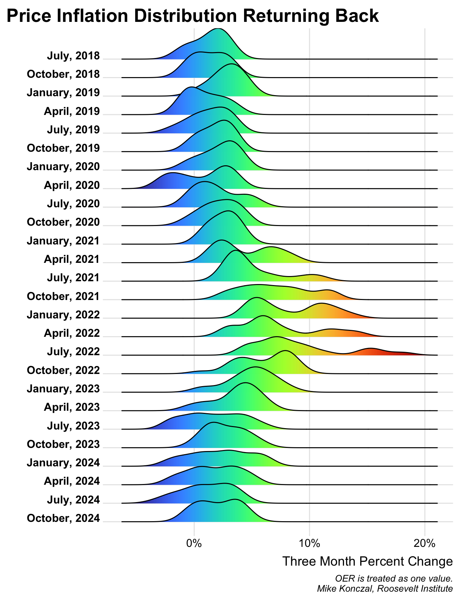

| Date | Outlet | Title | Type |
|---|---|---|---|
| September 14, 2023 | Planet Money | Wait, Did We Really Need To Raise Rates? | Podcast |
| September 08, 2023 | Roosevelt Institute | Supply-Side Expansion Has Driven the Decline In Inflation | White Paper |
| July 21, 2023 | The Nation | "Bidenomics" Vs. "Reaganomics" | Article |
| April 28, 2023 | The Nation | The Revolutionary Potential Of the Inflation Reduction Act | Article |
| March 28, 2023 | Why Is This Happening? | Wth Happened At Silicon Valley Bank? | Podcast |
| March 09, 2023 | House Subcommittee Testimony | Inflation In 2023: Causes, Progress, and Solutions | White Paper |
Mike Konczal serves as the Director of Macroeconomic Analysis at the Roosevelt Institute. His work centers on key economic issues such as achieving full employment, understanding inequality, and the interplay of public power in markets. He authored Freedom from the Market: America’s Fight to Liberate Itself from the Grip of the Invisible Hand, and co-authored Rewriting the Rules of the American Economy with Joseph Stiglitz. Mike is a respected voice in U.S. economic discourse, frequently cited in media outlets, and has provided testimony before Congress. His writing has been featured in the New York Times, Washington Post, and more, with appearances including CBS Sunday Morning, Planet Money, Washington Journal, and elsewhere.
I enjoy making informative graphics for the monthly economic data releases.
Show the code
library(tidyverse)
library(httr)
library(data.table)
library(magrittr)
library(ggridges)
library(lubridate)
library(janitor)
library(viridis)
library(scales)
cpi_data <- GET("https://download.bls.gov/pub/time.series/cu/cu.data.0.Current", user_agent("rortybomb@gmail.com")) %>%
content(as = "text") %>%
fread()
cpi_data <- cpi_data %>% clean_names()
cpi_data$value <- as.numeric(cpi_data$value)
cpi_data$series_id <- str_trim(cpi_data$series_id)
cpi_data$date <- paste(substr(cpi_data$period, 2,3), "01", substr(cpi_data$year, 3, 4), sep="/")
cpi_data$date <- as.Date(cpi_data$date, "%m/%d/%y")
series <- GET("https://download.bls.gov/pub/time.series/cu/cu.series", user_agent("rortybomb@gmail.com")) %>%
content(as = "text") %>%
fread()
series <- series %>% clean_names()
series$series_id <- str_trim(series$series_id)
items <- GET("https://download.bls.gov/pub/time.series/cu/cu.item", user_agent("rortybomb@gmail.com")) %>%
content(as = "text") %>%
fread()
series <- inner_join(series, items, by = c("item_code"))
cpi_data <- inner_join(cpi_data, series, by = c("series_id"))
cpi_weights <- read_csv(file = "data/inflation_weights.csv") %>% select(-year_weight)
cpi_data <- inner_join(cpi_data, cpi_weights, by = c("item_name"))
cpi_weights <- read_csv(file = "data/inflation_weights_2023.csv") %>% select(item_name, weight_2023 = weight, year = year_weight)
cpi_data <- left_join(cpi_data, cpi_weights, by = c("item_name", "year"))
cpi_data$weight <- ifelse(!is.na(cpi_data$weight_2023),cpi_data$weight_2023,cpi_data$weight)
### Make the graphic ###
median_terms <- read_csv("data/mediancpi_component_table.csv") %>% mutate(item_name = Component)
median <- cpi_data %>% filter(item_name %in% median_terms$item_name | item_name == "Owners' equivalent rent of residences") %>%
filter(period != "M13", seasonal == "S") %>%
arrange(date) %>%
group_by(item_name) %>%
mutate(Pchange3 = (value/lag(value, 3)-1)) %>%
ungroup() %>%
group_by(date) %>%
mutate(normalized = sum(weight)) %>%
mutate(weightN = weight/normalized) %>%
arrange(Pchange3) %>%
mutate(cumsum = cumsum(weight)/100) %>%
mutate(cumsumN = cumsum(weightN)) %>%
ungroup() %>%
mutate(Pchange3a = (1+Pchange3)^4-1)
start_month <- month(max(median$date))
quarters <- ((seq(start_month, start_month + 9, by=3) - 1) %% 12) + 1
#THIS IS THE GRAPHIC - 30 percent-trimmed distribution
median %>% mutate(dateF = as.factor(date)) %>%
filter(cumsumN <= 0.85 & cumsum >= 0.15) %>%
mutate(Pchange3a = (1+Pchange3)^4-1) %>%
filter(date >= "2017-06-01") %>%
filter(date != "2020-06-01") %>%
filter(month(date) %in% quarters) %>%
mutate(monthC = format(date, "%B, %Y")) %>%
mutate(monthC = fct_reorder(monthC,date)) %>%
mutate(monthCR = fct_rev(monthC)) %>%
ggplot(aes(x = Pchange3a, y = monthCR, fill = stat(x))) +
geom_density_ridges_gradient() +
scale_fill_viridis(option = "H") +
theme_ridges() +
theme(legend.position = "none") +
scale_x_continuous(labels = percent) +
labs(title="Distribution of Price Increases Moved Out\nBut Now Returning Back",
x="Three Month Percent Change", y="", caption="OER is treated as one value.\nMike Konczal, Roosevelt Institute") +
theme(plot.title.position = "plot", legend.position = "none", legend.title = element_blank(),
plot.title = element_text(size = 20,margin=margin(0,0,5,0)),
plot.subtitle = element_text(size=13),
plot.caption = element_text(size=10, face="italic"),
axis.text.y = element_text(size=12, face="bold"),
axis.text.x = element_text(size=12))
Here are some of the latest things I’ve been doing; you can find the full list of research, writings, and media around this website.
I’m often cited and quoted in coverage around the economy. Here’s some recent examples, with the full list here.
| Date | Outlet | Title |
|---|---|---|
| September 14, 2023 | Axios | 1 Big Thing: Surging Supply Brought Inflation Down |
| September 11, 2023 | Bloomberg | Five Things You Need To Know To Start Your Day |
| September 11, 2023 | New York Times | How Goldilocks Came To the Us Economy |
| August 29, 2023 | New York Times | A Sad Story: What Can We Learn From the 1970s? |
| August 03, 2023 | New York Times | Is Good News Finally Good News Again? |
| August 02, 2023 | Slow Boring | Why Did Inflation Fall? |
Praise for Freedom From the Market:

“The Roosevelt Institute’s Konczal is one of the warriors in this fight, arguing fiercely for the need to set much narrower limits on what is left to markets than has been the case in recent decades. A powerful polemic.”
- Martin Wolf, Financial Times
“By identifying an alternative grammar, one that is grounded in the American past, Freedom from the Market provides a way out of the political cul-de-sac created by the failure of the market to deliver on its promises of ‘freedom.’”
- Molly Michelmore, Democracy: A Journal of Ideas
“Freedom from the Market is an impressive book, easily one of the best I’ve read in the past several years. I cannot recommend it highly enough.”
- Matt Mazewski, Commonweal
“terrific book.”
- Jamelle Bouie, New York Times
“Freedom from the Market has the potential to be a very important book, focusing attention on the contested, messy but crucially important intersection between social movements and the state. It provides a set of ideas that people on both sides of that divide can learn from, and a lively alternative foundation to the deracinated technocratic notions of politics, in which good policy would somehow, magically, be politically self supporting, that has prevailed up until quite recently. Strongly recommended.”
—Henry Farrell, Crooked Timber